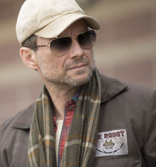
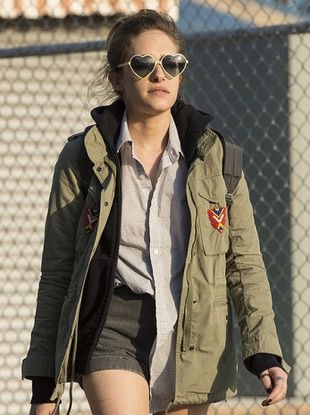
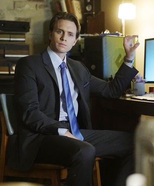
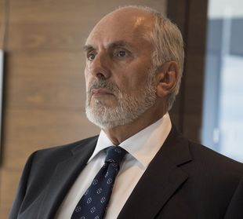
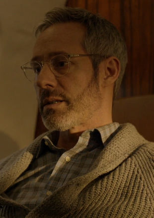
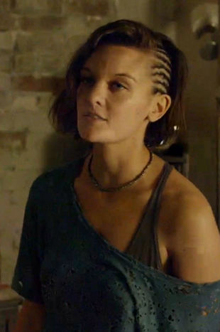

“ Elliot Alderson is a cybersecurity engineer and vigilante hacker who lives in New York City. He is played by Rami Malek.Elliot suffers from social anxiety disorder, clinical depression, delusions and paranoia. His internal life is revealed via voice-overs that provide insight into his mental state, his opinions of the people he encounters and the activity around him. These dialogues with the audience are designed to help us interpret Elliot's world, but given his mental illness, he is an unreliable narrator, leaving us unsure whether what he tells us we're seeing is actually what is happening. Typical of this is when Elliot hears everyone around him refer to E Corp as Evil Corp, reflecting his own opinion of the conglomerate.

“ Mr. Robot is the co-founder and leader of the hacker group fsociety, a revolutionary prophet who plans to bring down the world's largest conglomerate. Though he is intelligent and charismatic, Mr. Robot is also emotionally manipulative, and can be quick to violence. This has prompted comparisons to the behavior of militant cult leaders. It eventually becomes clear that Mr. Robot is a construct within Elliot Alderson's mind. (“eps1.8_m1rr0r1ng.qt”) His persona is an idealized representation of Elliot's deceased father, Edward; where Edward was unwilling or unable to take action, Mr. Robot was created to inspire war against E Corp and incite historical change. In some situations, Mr. Robot will take control and act through Elliot, thus explaining his direct interactions with other people. I have an idea that will change the world. I know it sounds really stupid, but I know how to do it. I think it could actually work. ”Angela Moss is a childhood friend of Elliot Alderson. She is portrayed by Portia Doubleday.

Corporate greed is a trickle down desire that reaches even the bottom of the food chain. ”Darlene Alderson is a hacker, programmer, a member of fsociety, and is Elliot's sister. She is played by Carly Chaikin..

Power belongs to the people that take it. Nothing to do with their hard work, strong ambitions, or rightful qualifications, no. The actual will to take is often the only thing that's necessary. ”— Tyrell Tyrell Wellick is the former Senior Vice President of Technology for E Corp. He is played by Martin Wallström.Portals allow travel between two different locations. Usually, these locations exist in the same universe. The only groups that have been known to use intergalactic portal technology are the Ricks and the Galactic Federation (Intergalactic Customs in "Pilot "). Some organizations and people have knowledge of interdimensional portal technology, but it is unclear whether they possess it or not (e.g. Time Court, Morty Smith (304-X), and The people of "Fart").The Portal Gun is a gadget that allows the user(s) to travel between different universes/dimensions/realities. The Gun was likely created by a Rick, although it is unknown which one; if there is any truth to C-137's fabricated origin story, then he may not be the original inventor.

In my life, as I was making my way, I always asked the question, 'Am I the most powerful person in the room?' And the answer needed to be 'Yes'. ” — Phillip PricePhillip Price is the CEO of E Corp. He is played by Michael Cristofer.. Every hacker has her fixation. You hack people, I hack time. ”— WhiteroseWhiterose is the leader of the Dark Army, a Chinese hacker group. She is a transgender woman masquerading as the male Minister Zhi Zhang, the Chinese Minister of State Security. She is played by BD Wong. Truth is, I shouldn't hate Ollie; he's not that bad a guy. He's too dumb to be bad. ”— Elliot Oliver "Ollie" Parker is an employee of Allsafe Cybersecurity, and Angela Moss's former boyfriend. He is portrayed by Ben Rappaport. Communication is key, Elliot. Real human interaction. That's what's important for you right now. ” Krista Gordon is Elliot's court-appointed therapist. She is played by Gloria Reuben.

Evil Corp is eighty percent of our business. If we lose them, that's gonna be it for us, that's gonna be it... for... me. ” -- Gideon
Gideon Goddard is CEO of Allsafe Cybersecurity, one of several vendors providing security to E Corp. Gideon cares deeply about the company and tries to build close working relationships with his staff, but hesitates to disclose that he is gay..

Promises matter, okay? I take this shit to heart. ”— Shayla (S1E2)Shayla Nico was Elliot's drug dealer, neighbor, and former lover. She was played by Frankie Shaw. Terry Colby, the CTO. Even though he's the head technology guy at one of the biggest companies in the world, he owns a Blackberry... He's not a techie. He's a moron. An arrogant moron - the worst kind. ”— Elliot Terence "Terry" Colby is a career executive, formerly Chief Technology Officer (CTO) of E Corp. Despite his position, Colby is not very up-to-date with technology; to compensate, he worked closely with the ambitious Senior Vice President of Technology, Tyrell Wellick.
Terry Colby is played by Bruce Altman. Scott Knowles was born on September 14, 1962. He has a brother who lives in Miami. His wife, Sharon Knowles, is thirteen years his younger. She works in the government, doing paperwork and bureaucracy. Scott was in charge of decoration his home. He is a wine aficionado. He and his wife met the Wellicks at an E Corp function when Tyrell first came to the company.